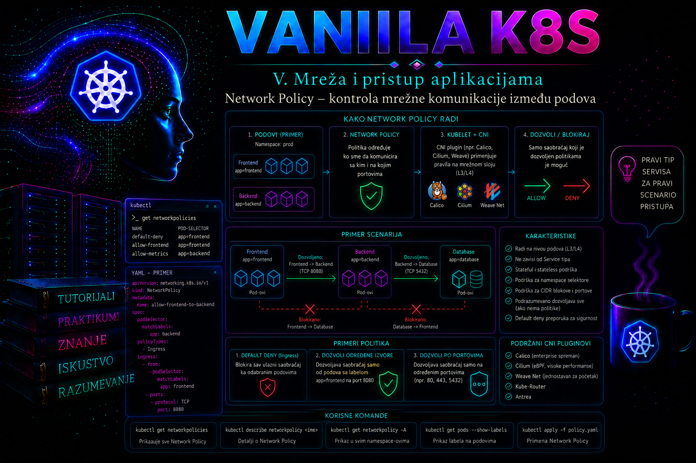

Vanilla Kubernetes

Kubernetes mrežni model podrazumevano omogućava neposrednu IP komunikaciju između podova bez obzira na to na kom se worker čvoru nalaze. Takav model pojednostavljuje povezivanje distribuiranih aplikacija, ali istovremeno znači da namespace, Service i RBAC sami po sebi ne sprečavaju jedan pod da uspostavi mrežnu vezu sa drugim podom. Namespace obezbeđuje logički opseg Kubernetes objekata, Service stabilnu adresu aplikacije, a RBAC kontroliše pristup Kubernetes API-ju; nijedan od tih mehanizama ne predstavlja mrežni firewall između workload-a.
Resurs NetworkPolicy omogućava administratoru da deklarativno odredi koji je dolazni i odlazni saobraćaj dozvoljen za izabrane podove. Standardna Kubernetes politika radi prvenstveno na trećem i četvrtom sloju mrežnog modela: bira izvore i odredišta prema labelama, namespace-ovima ili IP opsezima, a zatim ograničava protokole i portove. Njena najvažnija produkciona uloga jeste segmentacija aplikacija, smanjenje lateralnog kretanja napadača i sprovođenje principa najmanjih privilegija.
Samo postojanje NetworkPolicy objekta ne znači da se pravila zaista primenjuju. Kubernetes API čuva deklaraciju, ali stvarno filtriranje paketa mora da obezbedi instalirani mrežni dodatak, najčešće CNI komponenta sa podrškom za NetworkPolicy. Zbog toga administrator pre svake implementacije mora potvrditi ne samo da API prihvata objekat već i da mrežni sloj klastera podržava i izvršava zahtevanu vrstu politike.
Uloga NetworkPolicy resursa u Kubernetes mrežnom modelu
NetworkPolicy je namespaced resurs iz API grupe networking.k8s.io/v1. Polje spec.podSelector određuje podove na koje se politika odnosi, dok policyTypes navodi da li politika kontroliše dolazni saobraćaj, odlazni saobraćaj ili oba smera. Pravila u sekcijama ingress i egress predstavljaju dozvole. Standardni Kubernetes NetworkPolicy ne koristi eksplicitna pravila tipa „deny”; zabrana nastaje tako što se pod izoluje, a zatim se navedu samo dozvoljeni tokovi.
Pod koji nije izabran nijednom politikom za određeni smer smatra se neizolovanim u tom smeru. Na primer, pod bez ingress politike podrazumevano prihvata dolazni saobraćaj koji mreža može da mu isporuči. Kada ga makar jedna NetworkPolicy izabere za ingress, on postaje ingress-isolated i dozvoljeni su samo tokovi koje dopušta zbir svih ingress politika koje ga biraju. Isto pravilo nezavisno važi za egress.
Politike su aditivne. Redosled njihovog kreiranja nije važan, ne postoji prioritet standardnih Kubernetes NetworkPolicy objekata i jedna politika ne može da poništi dozvolu koju daje druga politika. Efektivni skup dozvoljenih konekcija predstavlja uniju pravila svih politika koje biraju pod u datom smeru. Zbog toga naizgled ispravna restriktivna politika može ostati bez efekta ako druga, šira politika već dozvoljava isti tok.
Za uspešnu vezu između dva izolovana poda moraju biti zadovoljena oba kraja komunikacije: egress pravila izvornog poda moraju dozvoliti izlaz, a ingress pravila odredišnog poda moraju dozvoliti ulaz. Dovoljno je da jedan od ta dva uslova nije ispunjen pa da konekcija ne uspe. Ova osobina je naročito važna tokom dijagnostike, jer simptom na klijentu ne pokazuje automatski na kojoj je strani paket blokiran.
Selektori podova i namespace-ova
podSelector u glavnom delu specifikacije bira podove samo unutar namespace-a u kome je NetworkPolicy kreirana. Prazan selektor podSelector: {} bira sve podove tog namespace-a. To je osnova za podrazumevane politike zabrane, ali predstavlja i visokorizičnu promenu ako se primeni bez prethodnog popisa stvarnih komunikacionih tokova.
Unutar ingress i egress pravila izvor ili odredište mogu se definisati pomoću podSelector, namespaceSelector, njihovom kombinacijom ili pomoću ipBlock. Samostalni podSelector odnosi se na podove u istom namespace-u kao politika. Samostalni namespaceSelector bira odgovarajuće namespace-ove i podrazumevano sve podove u njima. Kombinacija oba selektora u istoj stavci bira samo podove sa traženim labelama unutar izabranih namespace-ova.
Važno je razlikovati kombinaciju selektora od dve odvojene stavke liste. Jedna stavka koja sadrži i namespaceSelector i podSelector predstavlja logičko „AND”. Dve stavke, od kojih jedna sadrži namespace selektor, a druga pod selektor, predstavljaju „OR” i mogu dozvoliti znatno širi pristup nego što je administrator nameravao.
from:
- namespaceSelector:
matchLabels:
kubernetes.io/metadata.name: shop-prod
podSelector:
matchLabels:
app.kubernetes.io/name: frontend
Prethodno pravilo dozvoljava samo podove sa labelom app.kubernetes.io/name=frontend koji se nalaze u namespace-u shop-prod. Pouzdana ugrađena labela kubernetes.io/metadata.name olakšava izbor namespace-a po imenu, ali organizacije često dodaju i sopstvene labele kao što su environment=production, tenant=finance ili network-zone=trusted. Takve labele moraju biti kontrolisane procesom upravljanja promenama, jer korisnik koji sme da ih menja potencijalno može promeniti i mrežni pristup.
Ingress, egress i izolacija podova
Ingress u NetworkPolicy terminologiji označava saobraćaj koji ulazi u izabrane podove. Ne treba ga mešati sa Kubernetes Ingress objektom, koji usmerava HTTP i HTTPS zahteve prema servisima. NetworkPolicy ingress može kontrolisati TCP, UDP i SCTP tokove koje podržavaju Kubernetes API i mrežni dodatak, bez obzira na to da li saobraćaj dolazi preko Service-a, Ingress kontrolera, Gateway-a ili direktne pod IP adrese.
Egress pravila kontrolišu veze koje izabrani podovi iniciraju prema drugim podovima, internim servisima ili spoljnim adresama. Uvođenje egress izolacije često otkriva skrivene zavisnosti: DNS rezoluciju, NTP, interne registre, sisteme identiteta, baze podataka, servise za slanje elektronske pošte, proxy servere, telemetry kolektore i spoljne API-je. Zbog toga je egress politika operativno zahtevnija od jednostavne ingress segmentacije.
Politika koja bira sve podove, navodi određeni policyTypes, a nema odgovarajuća pravila predstavlja podrazumevanu zabranu za taj smer:
apiVersion: networking.k8s.io/v1
kind: NetworkPolicy
metadata:
name: default-deny-ingress-egress
namespace: shop-prod
spec:
podSelector: {}
policyTypes:
- Ingress
- EgressNakon primene ove politike svi podovi u namespace-u postaju izolovani u oba smera. Komunikacija se zatim vraća preciznim allow politikama. Ovaj pristup odgovara modelu „default deny, explicit allow”, ali se ne sme uvoditi naslepo u produkciju. Pre promene moraju biti evidentirani tokovi, vlasnici aplikacija, zavisnosti, portovi, protokoli, DNS zahtevi, health provere, monitoring i putanja ulaznog saobraćaja.
Portovi, protokoli i IP opsezi
Polje ports ograničava dozvolu na određeni protokol i port. Ako se protokol izostavi, podrazumeva se TCP. Port može biti numerički ili imenovani port kontejnera, pod uslovom da implementacija mrežnog dodatka pravilno podržava tu semantiku. Numerički portovi su lakši za neposrednu analizu, dok imenovani portovi mogu smanjiti vezivanje politike za konkretnu vrednost kada se aplikacioni manifesti i politike upravljaju koordinisano.
Standardni NetworkPolicy nije aplikacioni proxy i ne razume HTTP putanje, metode, korisničke identitete, SQL operacije ili sadržaj zahteva. Dozvola za TCP port 8080 znači da je mrežna veza prema tom portu dozvoljena; ne znači da je dozvoljen samo određeni REST endpoint. Za Layer 7 kontrolu potrebne su dodatne mogućnosti mrežnog dodatka, service mesh, API gateway ili aplikaciona autorizacija.
ipBlock omogućava definisanje CIDR opsega i opcionih izuzetaka pomoću polja except. Namenjen je prvenstveno adresama izvan klastera. Korišćenje pod IP opsega kroz ipBlock uglavnom nije dobar način identifikacije workload-a, jer su pod adrese dinamične, a ponašanje u prisustvu NAT-a, Service prevođenja adresa i različitih mrežnih implementacija može se razlikovati. Administrator mora proveriti da li politika vidi originalnu ili prevedenu adresu pre nego što na IP identitetu zasnuje bezbednosnu odluku.
to:
- ipBlock:
cidr: 203.0.113.0/24
except:
- 203.0.113.128/25
ports:
- protocol: TCP
port: 443
Ovaj primer dozvoljava HTTPS egress prema prvoj polovini dokumentacionog opsega 203.0.113.0/24, dok izuzima 203.0.113.128/25. U stvarnom okruženju dozvoljeni CIDR mora poticati iz zvaničnog inventara mreža. Domen se ne može pouzdano zameniti statičkim IP pravilom ako servis koristi promenljive cloud adrese, CDN ili više lokacija.
Zavisnost od CNI dodatka i granice standarda
Kubernetes definiše API i semantiku NetworkPolicy resursa, ali ne implementira samostalno filtriranje paketa. CNI ili druga mrežna komponenta mora nadgledati NetworkPolicy objekte i prevesti ih u pravila na čvorovima, virtuelnim interfejsima ili eBPF dataplane-u. Implementacije se razlikuju po arhitekturi, vidljivosti, logovanju, performansama, podršci za Windows čvorove i dodatnim funkcijama koje prevazilaze standardni API.
Prva administratorska provera jeste identifikacija aktivnog mrežnog dodatka:
kubectl get pods -n kube-system -o wide
kubectl get daemonsets -n kube-system
kubectl get customresourcedefinitions | grep -Ei 'calico|cilium|antrea|network'
kubectl get nodes -o jsonpath='{range .items[*]}{.metadata.name}{"\t"}{.status.nodeInfo.operatingSystem}{"\n"}{end}'Naziv sistemskih podova i prisustvo CRD objekata mogu pomoći u identifikaciji proizvoda, ali konačnu potvrdu treba tražiti u dokumentovanoj arhitekturi klastera i instalacionoj konfiguraciji. Čak i kada dodatak podržava politike, treba proveriti da li je funkcija uključena, da li svi čvorovi imaju zdrav agent i da li postoje poznata ograničenja za korišćenu verziju.
Standardni NetworkPolicy ne rešava sve bezbednosne potrebe. Ne kontroliše pristup Kubernetes API-ju, ne zamenjuje TLS, autentikaciju i autorizaciju aplikacije, ne štiti podatke u mirovanju i ne garantuje identitet procesa unutar kompromitovanog poda. Saobraćaj između kontejnera u istom podu odvija se preko zajedničkog mrežnog prostora i localhost interfejsa, pa standardna pod-orijentisana politika nije granica između tih kontejnera.
Takođe treba računati na specifičnosti saobraćaja koji potiče sa node-a ili se prevodi pre evaluacije pravila. Health provere load balancera, NodePort putanje, hostNetwork podovi, lokalni sistemski agenti i SNAT mogu se ponašati drugačije u zavisnosti od mrežnog dodatka. Takvi tokovi zahtevaju testiranje na stvarnoj platformi, a ne samo proveru validnosti YAML manifesta.
Planiranje politike u produkcionom okruženju
Dobra politika nastaje iz matrice komunikacija, a ne iz nagađanja. Za svaki workload treba evidentirati izvor, odredište, namespace, labele, protokol, port, smer iniciranja veze, poslovnu svrhu i vlasnika. Posebno se evidentiraju infrastrukturne zavisnosti: DNS, monitoring, logovanje, registry, admission i security agenti, backup, upravljanje tajnama i pristup spoljnim servisima.
| Izvor | Odredište | Protokol/port | Svrha | Očekivana odluka |
|---|---|---|---|---|
| frontend | backend | TCP/8080 | Aplikacioni API | Dozvoli |
| backend | database | TCP/5432 | PostgreSQL sesija | Dozvoli |
| svi aplikacioni podovi | klasterski DNS | UDP i TCP/53 | DNS rezolucija | Dozvoli |
| frontend | database | TCP/5432 | Neposredan pristup bazi | Zabrani |
| neautorizovan namespace | backend | TCP/8080 | Lateralni pristup | Zabrani |
Pre produkcione primene YAML treba proveriti klijentski i serverski, pregledati generisanu razliku i sačuvati postojeće stanje. kubectl diff može vratiti izlazni kod koji označava da razlika postoji, što nije isto što i greška validacije. Promena se prvo testira u reprezentativnom neprodukcijskom okruženju, a zatim uvodi kroz kontrolisani prozor uz spreman rollback i aktivan nadzor aplikacionih grešaka.
Dijagnostički model: od simptoma do dokaza uzroka
Mrežni incident ne treba započeti promenom politike, već reprodukcijom zahteva iz istog mrežnog konteksta iz kog ga aplikacija zaista šalje. Test sa administratorske radne stanice, control-plane čvora ili drugog namespace-a može pratiti drugu DNS, NAT, routing i policy putanju. Zato se najpre beleže izvorni pod i čvor, odredišno ime, Service i port, vreme testa, očekivani odgovor i tačan simptom, a zatim se proverava po jedan sloj.
| Simptom | Najverovatniji sloj | Prvi dokaz |
|---|---|---|
NXDOMAIN ili ime ne postoji | Naziv, namespace, Service ili DNS zapis | nslookup punog imena i kubectl get svc |
| DNS upit ističe | DNS egress, DNS Service, CoreDNS ili mrežna putanja | /etc/resolv.conf, UDP i TCP/53 test i stanje CoreDNS-a |
Connection refused | Odredište je dostižno, ali port ne sluša ili je pogrešno mapiran | Direktan Pod IP test, container port i log aplikacije |
| TCP timeout | NetworkPolicy, CNI, routing, firewall, MTU ili neispravan čvor | Poređenje Pod IP/ClusterIP testa i pozitivnog/negativnog policy testa |
| HTTP 4xx ili 5xx | Mrežna veza postoji; problem je u aplikaciji, autorizaciji ili zavisnosti | Status, zaglavlja, correlation ID i aplikacioni log |
| Kvar samo na jednom čvoru | CNI agent, ruta, interfejs, MTU ili dataplane tog čvora | Raspored podova po čvorovima i log/health mrežnog agenta |
Redosled provera ide od najmanje invazivnih ka privilegovanim: stanje poda i readiness, DNS ime, Service i EndpointSlice, direktan Pod IP i aplikacioni port, sve politike koje biraju izvor ili odredište, pa tek onda CNI agent, servisni proxy, rute, interfejsi, conntrack, MTU i firewall čvora. Ako Pod IP radi, a ClusterIP ne radi, fokus je na Service selektoru, targetPort, EndpointSlice-u i implementaciji Service VIP-a. Ako ne rade ni Pod IP ni ClusterIP, proveravaju se proces, port, politike i pod-mreža. Uspešan HTTP odgovor dokazuje više od samog ICMP testa: standard NetworkPolicy definiše ponašanje za TCP, UDP i opciono SCTP, dok ponašanje ICMP-a i drugih protokola nije jednoobrazno propisano između dodataka.
kubectl get pod -n shop-prod -o wide --show-labels
kubectl get svc,endpointslice -n shop-prod
kubectl get networkpolicy -n shop-prod
kubectl describe networkpolicy -n shop-prod
kubectl get events -n shop-prod --sort-by=.metadata.creationTimestamp
kubectl logs -n shop-prod deployment/backend --since=15m --timestamps
Ove komande su read-only i bezbedne su za početnu produkcionu trijažu ako nalog već ima odgovarajuća prava. kubectl describe networkpolicy prikazuje deklaraciju i selektore, ali ne dokazuje da je dataplane pravilo programirano. Standardni API nema prenosiv status koji potvrđuje završetak enforcement-a; posle kreiranja ili izmene politike postoji period eventualne konvergencije, pa se vreme promene koreliše sa funkcionalnim testovima i logovima konkretnog CNI dodatka.
Privremeno brisanje svih politika radi „provere” nije prihvatljiv produkcioni test: može otvoriti lateralno kretanje i ukloniti bezbednosnu granicu šire nego što incident zahteva. Bezbednija korekcija je vremenski ograničena, usko selektovana allow politika kroz odobrenu promenu, uz neposredan pozitivan test dozvoljenog toka i negativan test toka koji mora ostati blokiran. Osnovni uzrok se zatim dokumentuje odvojeno od privremenog zaobilaznog rešenja.
Integrisani praktikum: segmentacija troslojne aplikacije
Poslovni i tehnički kontekst. Produkciona aplikacija internet prodavnice koristi namespace shop-prod i tri sloja: frontend, backend i PostgreSQL pod database. Bez mrežnih politika svaki pod koji može da rutira do baze može pokušati vezu na port 5432. Cilj promene je da frontend pristupa samo backend servisu na TCP portu 8080, backend bazi na TCP portu 5432, a svi aplikacioni podovi klasterskom DNS servisu. Direktan frontend pristup bazi i pristup iz test namespace-a moraju biti blokirani.
Referentno okruženje i preduslovi. Klaster koristi Linux worker čvorove, funkcionalan CoreDNS ili kompatibilan DNS servis i CNI dodatak koji izvršava Kubernetes NetworkPolicy. Administrator koristi direktorijum ~/vanilla-k8s-lab/29-network-policy. Potrebna su prava za čitanje namespace-a, podova, servisa, endpoint-a i politika, kao i za kreiranje, izmenu i brisanje objekata u namespace-ovima shop-prod i shop-test. Promena CNI konfiguracije nije deo praktikuma i zahteva odvojena klasterska ovlašćenja.
-
Proveriti identitet, kontekst i prava pristupa.
Pogrešan kubeconfig kontekst može primeniti restriktivnu politiku na pogrešan klaster. Administrator prvo beleži aktivni kontekst i proverava najmanji skup potrebnih ovlašćenja.
Validacija: kontekst i API endpoint moraju odgovarati laboratorijskom klasteru, a svaka potrebna provera mora vratitikubectl config current-context kubectl cluster-info kubectl auth can-i get pods -n shop-prod kubectl auth can-i create networkpolicies.networking.k8s.io -n shop-prod kubectl auth can-i delete networkpolicies.networking.k8s.io -n shop-prod kubectl auth can-i create deployments.apps -n shop-prod kubectl auth can-i create services -n shop-prodyes. Rezultatnonije razlog za traženje cluster-admin naloga; potrebno je zatražiti namespaced ulogu sa nedostajućim glagolom i resursom. -
Napraviti radni direktorijum i početne namespace-ove.
Deklarativni manifest čuva se kao dokaz izvedene promene i može se verzionisati.
Validacija:mkdir -p ~/vanilla-k8s-lab/29-network-policy cd ~/vanilla-k8s-lab/29-network-policy cat > 01-namespaces.yaml <<'EOF' apiVersion: v1 kind: Namespace metadata: name: shop-prod labels: environment: production --- apiVersion: v1 kind: Namespace metadata: name: shop-test labels: environment: test EOF kubectl apply -f 01-namespaces.yaml
Oba namespace-a moraju imati statuskubectl get namespaces shop-prod shop-test --show-labelsActive;shop-prodmora sadržati labeluenvironment=production, ashop-testlabeluenvironment=test. -
Implementirati referentnu aplikaciju.
Primer koristi tri Deployment-a i tri ClusterIP servisa. PostgreSQL je laboratorijski pokrenut sa jasno označenom zamenskom lozinkom; u produkciji bi poverljiva vrednost bila isporučena preko odobrenog sistema za tajne, a ne zapisana u manifestu.
Validacija:cat > 02-application.yaml <<'EOF' apiVersion: apps/v1 kind: Deployment metadata: name: frontend namespace: shop-prod spec: replicas: 1 selector: matchLabels: app.kubernetes.io/name: frontend template: metadata: labels: app.kubernetes.io/name: frontend app.kubernetes.io/part-of: shop spec: containers: - name: web image: nginx:1.27-alpine ports: - name: http containerPort: 80 --- apiVersion: v1 kind: Service metadata: name: frontend namespace: shop-prod spec: selector: app.kubernetes.io/name: frontend ports: - name: http port: 80 targetPort: http --- apiVersion: apps/v1 kind: Deployment metadata: name: backend namespace: shop-prod spec: replicas: 1 selector: matchLabels: app.kubernetes.io/name: backend template: metadata: labels: app.kubernetes.io/name: backend app.kubernetes.io/part-of: shop spec: containers: - name: api image: hashicorp/http-echo:1.0 args: - -listen=:8080 - -text=shop-backend-ok ports: - name: api containerPort: 8080 --- apiVersion: v1 kind: Service metadata: name: backend namespace: shop-prod spec: selector: app.kubernetes.io/name: backend ports: - name: api port: 8080 targetPort: api --- apiVersion: apps/v1 kind: Deployment metadata: name: database namespace: shop-prod spec: replicas: 1 selector: matchLabels: app.kubernetes.io/name: database template: metadata: labels: app.kubernetes.io/name: database app.kubernetes.io/part-of: shop spec: containers: - name: postgres image: postgres:17-alpine env: - name: POSTGRES_DB value: shop - name: POSTGRES_USER value: shop_app - name: POSTGRES_PASSWORD value: LAB_ONLY_REPLACE_ME ports: - name: postgres containerPort: 5432 --- apiVersion: v1 kind: Service metadata: name: database namespace: shop-prod spec: selector: app.kubernetes.io/name: database ports: - name: postgres port: 5432 targetPort: postgres EOF kubectl apply --server-side --dry-run=server -f 02-application.yaml kubectl apply -f 02-application.yaml kubectl rollout status deployment/frontend -n shop-prod --timeout=120s kubectl rollout status deployment/backend -n shop-prod --timeout=120s kubectl rollout status deployment/database -n shop-prod --timeout=180s
Sva tri Deployment-a moraju imatikubectl get deployments,pods,services -n shop-prod -o wide kubectl get endpointslices.discovery.k8s.io -n shop-prodAVAILABLE 1, podovi stanjeRunning, a svaki Service najmanje jedan odgovarajući endpoint. Prazan EndpointSlice ukazuje na neusaglašene labele ili nespreman pod, a ne na problem NetworkPolicy mehanizma. -
Napraviti kontrolne klijente i potvrditi početno otvoreno stanje.
Dva dugotrajna test poda omogućavaju ponovljive pozitivne i negativne testove bez stalnog kreiranja novih objekata.
Validacija: pre izolacije prvi zahtev mora vratiticat > 03-test-clients.yaml <<'EOF' apiVersion: v1 kind: Pod metadata: name: frontend-client namespace: shop-prod labels: app.kubernetes.io/name: frontend app.kubernetes.io/component: test-client spec: containers: - name: tools image: nicolaka/netshoot:latest command: ["sh", "-c", "sleep 36000"] --- apiVersion: v1 kind: Pod metadata: name: unauthorized-client namespace: shop-test labels: app.kubernetes.io/name: unauthorized-client spec: containers: - name: tools image: nicolaka/netshoot:latest command: ["sh", "-c", "sleep 36000"] EOF kubectl apply -f 03-test-clients.yaml kubectl wait --for=condition=Ready pod/frontend-client -n shop-prod --timeout=120s kubectl wait --for=condition=Ready pod/unauthorized-client -n shop-test --timeout=120s kubectl exec -n shop-prod frontend-client -- curl -fsS --connect-timeout 3 http://backend:8080 kubectl exec -n shop-prod frontend-client -- nc -zvw3 database 5432 kubectl exec -n shop-test unauthorized-client -- curl -fsS --connect-timeout 3 http://backend.shop-prod.svc.cluster.local:8080shop-backend-ok, TCP provera baze mora uspeti, a klijent izshop-testmora moći da pristupi backend-u. Time se potvrđuje početno stanje i dokazuje da kasniji neuspeh potiče od uvedene politike, a ne od neispravne aplikacije. -
Utvrditi DNS selektore pre pisanja egress dozvole.
U mnogim klasterima DNS podovi koriste labelu
k8s-app=kube-dns, ali administrator ne sme pretpostaviti naziv ili labelu.
Validacija: u ovom referentnom okruženju mora postojati Servicekubectl get services -n kube-system --show-labels kubectl get pods -n kube-system --show-labels | grep -Ei 'dns|coredns' kubectl get service kube-dns -n kube-system -o widekube-dns, a njegovi podovi moraju imati labeluk8s-app=kube-dns. Ako klaster koristi druge labele, sledeći manifest mora se prilagoditi stvarnom inventaru. Pogrešan selektor bi nakon default-deny politike prekinuo DNS i proizveo simptome slične nedostupnom servisu. -
Kreirati default-deny i precizne allow politike.
Jedan manifest uvodi osnovnu zabranu za sve podove u
shop-prod, dozvoljava DNS, frontend-to-backend i backend-to-database tokove. Backend dobija ingress dozvolu samo od podova sa frontend labelom u istom produkcionom namespace-u. Database prihvata samo backend.
Validacija:cat > 04-network-policies.yaml <<'EOF' apiVersion: networking.k8s.io/v1 kind: NetworkPolicy metadata: name: default-deny-ingress-egress namespace: shop-prod spec: podSelector: {} policyTypes: - Ingress - Egress --- apiVersion: networking.k8s.io/v1 kind: NetworkPolicy metadata: name: allow-dns-egress namespace: shop-prod spec: podSelector: {} policyTypes: - Egress egress: - to: - namespaceSelector: matchLabels: kubernetes.io/metadata.name: kube-system podSelector: matchLabels: k8s-app: kube-dns ports: - protocol: UDP port: 53 - protocol: TCP port: 53 --- apiVersion: networking.k8s.io/v1 kind: NetworkPolicy metadata: name: allow-frontend-to-backend namespace: shop-prod spec: podSelector: matchLabels: app.kubernetes.io/name: backend policyTypes: - Ingress ingress: - from: - podSelector: matchLabels: app.kubernetes.io/name: frontend ports: - protocol: TCP port: 8080 --- apiVersion: networking.k8s.io/v1 kind: NetworkPolicy metadata: name: allow-frontend-egress-to-backend namespace: shop-prod spec: podSelector: matchLabels: app.kubernetes.io/name: frontend policyTypes: - Egress egress: - to: - podSelector: matchLabels: app.kubernetes.io/name: backend ports: - protocol: TCP port: 8080 --- apiVersion: networking.k8s.io/v1 kind: NetworkPolicy metadata: name: allow-backend-to-database namespace: shop-prod spec: podSelector: matchLabels: app.kubernetes.io/name: database policyTypes: - Ingress ingress: - from: - podSelector: matchLabels: app.kubernetes.io/name: backend ports: - protocol: TCP port: 5432 --- apiVersion: networking.k8s.io/v1 kind: NetworkPolicy metadata: name: allow-backend-egress-to-database namespace: shop-prod spec: podSelector: matchLabels: app.kubernetes.io/name: backend policyTypes: - Egress egress: - to: - podSelector: matchLabels: app.kubernetes.io/name: database ports: - protocol: TCP port: 5432 EOF kubectl apply --server-side --dry-run=server -f 04-network-policies.yaml kubectl diff -f 04-network-policies.yaml || true kubectl apply -f 04-network-policies.yaml
Mora postojati šest politika. Izlazkubectl get networkpolicies -n shop-prod kubectl describe networkpolicy -n shop-prod kubectl get networkpolicies -n shop-prod -o yaml > network-policies-applied.yamldescribemora pokazati očekivane pod selektore, smerove i portove. Sačuvani fajl predstavlja tehnički dokaz stvarno prihvaćenih API objekata, ali još ne dokazuje izvršavanje pravila u dataplane-u. -
Izvesti pozitivni test dozvoljene aplikacione veze.
Frontend klijent mora i dalje moći da razreši DNS ime i pristupi backend servisu.
Validacija: DNS upit mora vratiti ClusterIP servisa, a HTTP odgovor mora bitikubectl exec -n shop-prod frontend-client -- nslookup backend.shop-prod.svc.cluster.local kubectl exec -n shop-prod frontend-client -- curl -fsS --connect-timeout 3 http://backend:8080shop-backend-ok. Ako DNS ne radi, proveravaju se selektori DNS podova i TCP/UDP port 53. Ako DNS radi, a HTTP ne radi, proveravaju se labele izvornog i odredišnog poda, oba smera politike, Service endpoint-i i port 8080. -
Izvesti negativne testove zabranjenih tokova.
Direktan pristup frontend klijenta bazi i pristup backend-u iz
shop-testmoraju biti blokirani.
Validacija: obe složene komande moraju završiti izlaznim kodom 0 zato što je unutrašnja konekcija očekivano neuspešna. Timeout je čest simptom tihog odbacivanja paketa. Trenutnikubectl exec -n shop-prod frontend-client -- sh -c 'nc -zvw3 database 5432; test $? -ne 0' kubectl exec -n shop-test unauthorized-client -- sh -c 'curl -fsS --connect-timeout 3 http://backend.shop-prod.svc.cluster.local:8080; test $? -ne 0'Connection refusedčešće ukazuje da je paket stigao do odredišta, ali proces ne sluša na portu; zato se taj simptom ne sme automatski tumačiti kao uspešno blokiranje politikom. -
Potvrditi stvaran backend-to-database tok.
Pošto referentni backend kontejner nema klijentske alate za PostgreSQL, privremeni dijagnostički pod dobija istu bezbednosnu labelu kao backend. Time se proverava politika identiteta zasnovana na labeli.
Validacija: TCP veza mora uspeti. Zatim treba privremeno promeniti samo labelu dijagnostičkog poda i ponoviti test:kubectl run backend-diagnostic \ -n shop-prod \ --image=nicolaka/netshoot:latest \ --labels=app.kubernetes.io/name=backend,app.kubernetes.io/component=diagnostic \ --restart=Never \ --command -- sleep 600 kubectl wait --for=condition=Ready pod/backend-diagnostic -n shop-prod --timeout=120s kubectl exec -n shop-prod backend-diagnostic -- nc -zvw3 database 5432
Nakon promene nakubectl label pod backend-diagnostic -n shop-prod app.kubernetes.io/name=untrusted --overwrite kubectl exec -n shop-prod backend-diagnostic -- sh -c 'nc -zvw3 database 5432; test $? -ne 0' kubectl label pod backend-diagnostic -n shop-prod app.kubernetes.io/name=backend --overwriteuntrustedpristup mora biti blokiran, a vraćanjem labele ponovo dozvoljen. Ovaj test pokazuje da upravljanje labelama predstavlja bezbednosno osetljivu privilegiju. -
Pregledati događaje, aplikacione logove i logove mrežnog dodatka.
Standardni NetworkPolicy objekat nema univerzalni status koji potvrđuje da su sva dataplane pravila programirana. Događaji i logovi zato se čitaju zajedno sa funkcionalnim testovima.
Validacija: aplikacioni logovi ne smeju pokazivati neočekivane talase timeout-a ili neuspelih konekcija. Logovi mrežnog dodatka nalaze se u sistemskim agentima na svakom čvoru, obično u namespace-ukubectl get events -n shop-prod --sort-by=.metadata.creationTimestamp kubectl logs -n shop-prod deployment/backend --tail=100 kubectl logs -n shop-prod deployment/database --tail=100 kubectl get pods -n kube-system -o wide | grep -Ei 'calico|cilium|antrea|weave|kube-router'kube-system, ali tačan naziv kontejnera i nivo detalja zavise od proizvoda. Preuzimaju se ciljano, na primer:
Traže se greške pri parsiranju politike, programiranju pravila, sinhronizaciji sa API serverom ili radu agenta na čvoru gde se nalazi problematični pod. Odsustvo zapisa o odbijenom paketu nije dokaz da paket nije blokiran, jer drop logging često nije podrazumevano uključen.kubectl logs -n kube-system POD_MREZNOG_AGENTA -c KONTEJNER_AGENTA --since=15m -
Dokumentovati kriterijume prihvatanja.
Promena je prihvaćena samo ako su ispunjeni svi merljivi uslovi:
- sva tri aplikaciona Deployment-a imaju željeni broj raspoloživih replika;
- DNS rezolucija iz izolovanih podova uspeva preko UDP i, gde alat omogućava, TCP porta 53;
- frontend dobija HTTP odgovor
shop-backend-oksa backend servisa na portu 8080; - backend-identifikovani dijagnostički pod uspostavlja TCP vezu sa bazom na portu 5432;
- frontend ne može neposredno da pristupi bazi;
- klijent iz
shop-testne može da pristupi backend-u; - nema novih kritičnih aplikacionih ili CNI grešaka tokom najmanje jednog definisanog perioda nadzora;
- primenjeni manifest, rezultati testova, vreme promene, izvršilac i rollback postupak evidentirani su u change zapisu i repozitorijumu infrastrukture.
-
Izvesti cleanup ili kontrolisani rollback.
U laboratoriji se brišu svi kreirani objekti. U produkciji se ne briše nasumično samo default-deny politika, jer bi to moglo neprimetno vratiti potpuno otvorenu komunikaciju. Rollback mora vratiti prethodno odobren skup politika iz verzionisanog manifesta.
Upozorenje: sledeće komande brišu laboratorijske namespace-ove i sve objekte u njima. Ne smeju se izvršavati u produkcionom klasteru.
Validacija:kubectl delete pod backend-diagnostic -n shop-prod --ignore-not-found kubectl delete -f 04-network-policies.yaml kubectl delete -f 03-test-clients.yaml kubectl delete -f 02-application.yaml kubectl delete -f 01-namespaces.yaml
Prva komanda treba da vrati da resursi nisu pronađeni nakon završetka brisanja. Druga ne sme prikazati politike iz obrisanih namespace-ova. Ako je cilj samo rollback politika uz očuvanje aplikacije, primenjuje se prethodno sačuvan i odobren manifest umesto brisanja namespace-a.kubectl get namespaces shop-prod shop-test kubectl get networkpolicies --all-namespaces
Tipične greške i dijagnostika
- CNI ne izvršava NetworkPolicy. API prihvata objekte, ali negativni testovi i dalje uspevaju. Proveravaju se tip CNI dodatka, uključene funkcije, zdravlje agenata na svim čvorovima i podrška korišćene verzije.
- Pogrešan podSelector. Politika bira nula podova ili pogrešnu grupu. Provera se radi komandom
kubectl get pods -n NAMESPACE -l 'SELEKTOR' --show-labels. Prazan rezultat znači da politika nema očekivani cilj. - Dozvoljen je samo jedan smer. Ingress odredišta je dozvoljen, ali egress izvora ostaje blokiran, ili obrnuto. Analiziraju se sve politike koje biraju oba poda.
- DNS je zaboravljen. Zahtevi po imenu ne uspevaju, dok test prema direktnoj IP adresi može uspeti. Proveravaju se stvarne labele DNS podova, namespace, UDP/53 i TCP/53.
- Mešanje AND i OR selektora. Dve odvojene stavke u
fromilitoproširuju dozvolu, dok sunamespaceSelectoripodSelectoru jednoj stavci istovremeni uslovi. - Pogrešan port. Service port, targetPort i containerPort nisu pravilno razlikovani. Politika se uobičajeno piše prema odredišnom portu na podu, a stvarno ponašanje se potvrđuje testom preko iste putanje koju koristi aplikacija.
- Preširoka dodatna politika. Restriktivna politika izgleda ispravno, ali druga politika sa širim selektorom već dozvoljava tok. Pregledaju se svi NetworkPolicy objekti u namespace-u, jer su pravila aditivna.
- Oslanjanje na IP adresu nakon NAT-a.
ipBlockne daje očekivani rezultat zbog SNAT/DNAT obrade. Ispituje se konkretna putanja paketa i dokumentacija mrežnog dodatka, load balancera i Service implementacije. - Promena labele zaobilazi segmentaciju. Korisnik koji može menjati labele workload-a može ga uključiti u dozvoljenu grupu. RBAC i admission kontrola moraju ograničiti izmene bezbednosno značajnih labela.
Administratorske prakse
- Inventar komunikacionih tokova. Proveravaju se aplikaciona dokumentacija, Service i EndpointSlice objekti, flow logovi mrežnog dodatka i telemetry podaci. Inventar se ažurira pre svakog novog servisa, promene porta ili spoljne integracije. Nepoznat ponavljajući tok ili odredište van odobrene matrice zahteva reakciju vlasnika aplikacije i security tima. Dokumentuju se izvor, odredište, port, protokol, svrha i vlasnik u CMDB-u ili repozitorijumu arhitekture. Uspeh se meri procentom produkcionih tokova koji imaju evidentiranu poslovnu svrhu i vlasnika.
- Kontrola pokrivenosti default-deny politikama. Najmanje nakon kreiranja namespace-a i tokom periodičnog security pregleda izvršava se
kubectl get networkpolicies -Ai proverava da li produkcioni namespace ima eksplicitnu ingress i egress osnovu. Namespace bez odobrene politike predstavlja odstupanje. Prva reakcija nije automatsko uvođenje zabrane, već inventar zavisnosti i plan kontrolisane implementacije. Nalaz se evidentira u security backlog-u. Uspeh se meri udelom produkcionih namespace-ova sa validiranom segmentacijom. - Validacija selektora nakon promene labela. Posle svakog Deployment rollout-a ili izmene standarda labeliranja izvršava se
kubectl get pods -n NAMESPACE --show-labelsi ciljane-lprovere za svaku kritičnu politiku. Politika koja iznenada bira nula podova ili neuobičajeno veliki broj podova zahteva zaustavljanje rollout-a i poređenje sa prethodnom verzijom. Rezultat se beleži u CI/CD izveštaju i change zapisu. Uspeh se meri odsustvom incidenata izazvanih neusaglašenim labelama. - Pozitivni i negativni sintetički testovi. Nakon svake izmene politike i periodično prema kritičnosti aplikacije pokreću se testovi dozvoljenih i zabranjenih tokova. Dozvoljen tok koji ne uspe ili zabranjen tok koji uspe predstavlja neposredan razlog za rollback ili izolaciju promene. Rezultati sa vremenom, izvorom, odredištem i izlaznim kodom čuvaju se uz deployment evidenciju. Uspeh se meri stopom prolaska testova i vremenom otkrivanja pogrešne politike.
- Nadzor zdravlja CNI agenata. Prate se dostupnost DaemonSet podova, restartovanja, greške sinhronizacije i kašnjenje programiranja pravila. Provera se obavlja kontinuirano monitoring sistemom i ručno nakon promene CNI konfiguracije ili nadogradnje čvora. Nedostupan agent na bilo kom aktivnom worker čvoru ili rast grešaka zahteva proveru node-a, logova i vendor procedure. Incident i zahvaćeni workload-i evidentiraju se u operativnom sistemu. Uspeh se meri dostupnošću agenata i vremenom oporavka.
- Kontrola privilegija nad NetworkPolicy i labelama. Periodično i nakon RBAC promene koriste se
kubectl auth can-ii pregled Role/RoleBinding objekata. Neočekivano pravo kreiranja politika ili izmene workload-a sa bezbednosnim labelama zahteva ukidanje preširoke dozvole i audit prethodnih promena. Evidencija se čuva u IAM dokumentaciji i revizorskom tragu. Uspeh se meri brojem naloga sa opravdanim pristupom i odsustvom neodobrenih izmena. - Verzionisanje i oporavak konfiguracije. Čuvaju se deklarativni NetworkPolicy manifesti, namespace labele, pripadajući testovi i odobrena matrica tokova. Promene se čuvaju pri svakom commit-u u zaštićenom Git repozitorijumu sa istorijom i pregledom najmanje dve osobe za kritične namespace-ove. Integritet se proverava kontrolom commit potpisa, CI validacijom i serverskim dry-run testom. Probni restore se izvodi u neprodukcijskom namespace-u primenom označene verzije i ponavljanjem pozitivnih i negativnih testova. Backup je upotrebljiv samo ako vraćena politika proizvodi očekivani skup dozvoljenih i zabranjenih tokova.
Kontrolna lista
- Aktivni kubeconfig kontekst i API endpoint provereni su komandama
kubectl config current-contextikubectl cluster-info. - CNI dodatak i njegova podrška za NetworkPolicy potvrđeni su iz instalacione konfiguracije i zdravlja agenata na svim worker čvorovima.
- Komunikaciona matrica sadrži izvor, odredište, namespace, labele, protokol, port, poslovnu svrhu i vlasnika svakog dozvoljenog toka.
- Stvarne labele podova i namespace-ova proverene su ciljanim
kubectl get ... --show-labelskomandama. - DNS Service, DNS pod selektori i dozvole za UDP/TCP port 53 potvrđeni su pre egress izolacije.
- Manifest je prošao
kubectl apply --server-side --dry-run=server, a planirana razlika pregledana je pomoćukubectl diff. - Sve politike koje biraju izvorni i odredišni pod pregledane su zbog aditivne semantike pravila.
- Najmanje jedan dozvoljeni tok potvrđen je uspešnom DNS i aplikacionom proverom.
- Najmanje jedan zabranjeni tok potvrđen je kontrolisanim negativnim testom sa očekivanim neuspehom veze.
- Aplikacioni događaji, logovi i zdravlje CNI agenata provereni su nakon primene.
- Prethodna odobrena verzija politika dostupna je kao testiran rollback.
- Manifest, rezultati testova, izvršilac, vreme, razlog i ishod promene evidentirani su u Git repozitorijumu i change zapisu.
Zaključak
Administrator nakon ove lekcije treba da razume da NetworkPolicy nije dodatna lista firewall pravila, već deklarativni model izolacije podova čije izvršavanje zavisi od mrežnog dodatka. Mora razlikovati podrazumevano otvoren pod od ingress-isolated i egress-isolated poda, razumeti aditivnost politika i znati da uspešna veza između izolovanih workload-a zahteva dozvolu na oba kraja komunikacije.
Praktična veština ne završava se pisanjem YAML manifesta. Administrator mora da izradi komunikacionu matricu, potvrdi selektore nad stvarnim objektima, sačuva DNS i infrastrukturne zavisnosti, uvede default-deny kontrolisano, izvede pozitivne i negativne testove i razlikuje timeout izazvan odbacivanjem paketa od DNS, Service, EndpointSlice ili aplikacionog problema. Posebno mora razumeti da labele predstavljaju deo bezbednosnog identiteta workload-a i da prava za njihovu izmenu moraju biti ograničena i nadzirana.
Produkcioni rizici nastaju kada se politika primeni bez inventara tokova, kada CNI ne izvršava pravila, kada se zaboravi egress prema DNS-u, kada druga politika proširi dozvolu ili kada se IP adrese tumače bez razumevanja NAT putanje. Standardni NetworkPolicy ostaje Layer 3/4 mehanizam i ne zamenjuje TLS, aplikacionu autentikaciju, RBAC, admission kontrolu, zaštitu tajni niti Layer 7 autorizaciju.
Administrator je odgovoran da promenu sprovede u granicama odobrenih ovlašćenja, da ne menja klasterski mrežni dodatak bez posebnog plana i da eskalira kada ponašanje zavisi od nedokumentovanog CNI ograničenja, hostNetwork saobraćaja, NAT-a, Windows čvorova ili load balancer putanje. Ispravno implementirana politika mora biti ponovljiva, merljivo testirana, verzionisana i povezana sa poslovnim razlogom. Tek tada mrežna segmentacija postaje pouzdana produkciona kontrola, a ne samo objekat prisutan u Kubernetes API-ju.